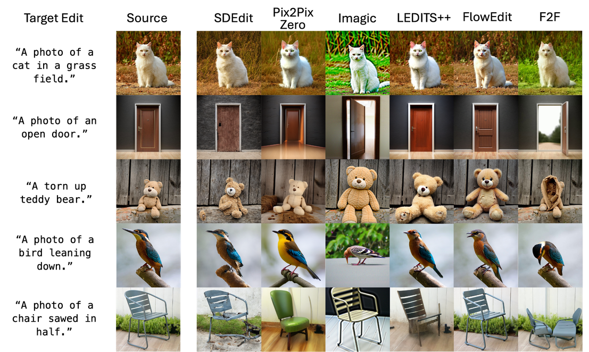
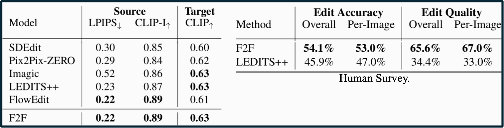
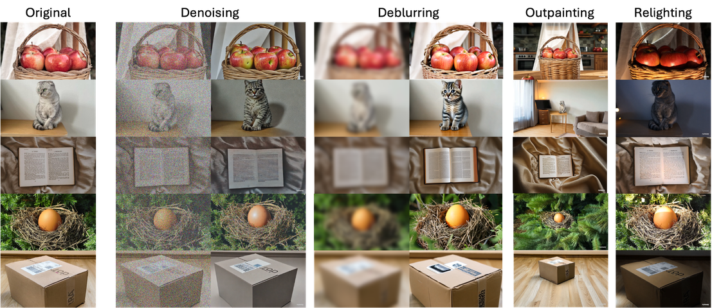
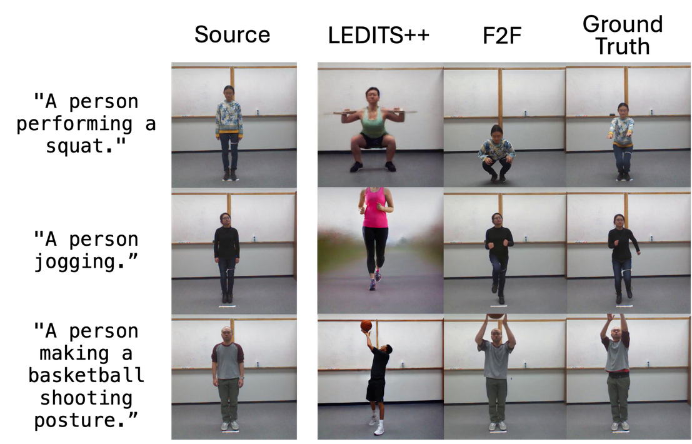
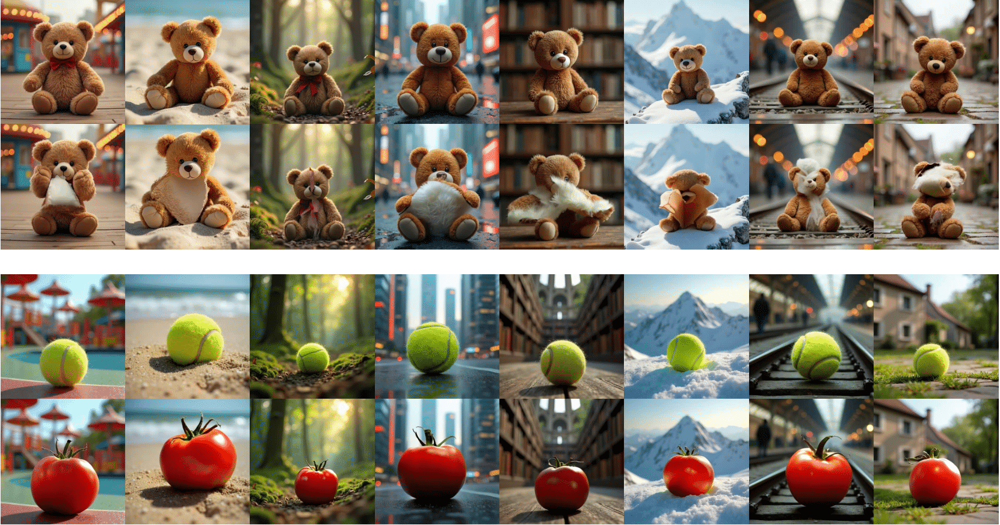

Pathways on the Image Manifold:
Image Editing via Video Generation
Technion - Israel Institute of Technology

Presented at CVPR 2025
TL;DR
We redefine image editing as a video generation task by leveraging pretrained generative diffusion video models. Our approach produces a smooth, continuous pathway on the image manifold with temporally coherent transitions from the source image to the edited version, thereby enhancing edit precision while preserving critical source details.
Editing Examples
Abstract
Recent advances in image editing, driven by image diffusion models, have shown remarkable progress. However, significant challenges remain, as these models often struggle to follow complex edit instructions accurately and frequently compromise fidelity by altering key elements of the original image. Simultaneously, video generation has made remarkable strides, with models that effectively function as consistent and continuous world simulators. In this paper, we propose merging these two fields by utilizing image-to-video models for image editing. We reformulate image editing as a temporal process, using pretrained video models to create smooth transitions from the original image to the desired edit. This approach traverses the image manifold continuously, ensuring consistent edits while preserving the original image's key aspects. Our approach achieves state-of-the-art results on text-based image editing, demonstrating significant improvements in both edit accuracy and image preservation.
Frame2Frame
Our method, Frame2Frame (F2F), operates in three stages. First, given a source image and an editing prompt, a Vision-Language Model generates a Temporal Editing Caption, describing how the edit should naturally evolve over time. Next, this caption guides an image-to-video generator to produce a smooth and realistic progression of the edit. Finally, our frame selection strategy identifies the optimal frame that best fulfills the intended edit, resulting in the final edited image.
Edit Manifold Pathway
We visualize the editing process within the natural image manifold using CLIP’s principal components. Unlike single-image methods that can cause abrupt shifts—such as jumping to a red cluster and removing the “AI” on the shirt—our video-based approach navigates the manifold incrementally, enabling smoother edits. This allows us to reach the purple cluster, which preserves key attributes like the “AI” on the shirt while successfully editing the person forming a heart shape.
Results

Our approach consistently outperforms existing methods across various editing tasks on the TEdBench dataset, producing edits that better align with target prompts while preserving the source image’s content and structure.
Additional Vision Tasks
We demonstrate our framework’s applicability beyond traditional editing by applying it to fundamental image manipulation tasks, showing great potential for future research directions
PosEdit
We introduce PosEdit, a benchmark for human pose editing derived from the UTD-MHAD dataset. In this dataset, subjects perform predefined actions in a controlled indoor environment, providing ground-truth images for each editing task. Evaluations using PosEdit demonstrate the advantages of our method.
Background Ablation
We present additional ablation results demonstrating our method's ability to handle two distinct editing challenges: (1) diverse backgrounds and (2) out-of-video-distribution edits.
BibTeX
@article{rotstein2024pathways,
title={Pathways on the image manifold: Image editing via video generation},
author={Rotstein, Noam and Yona, Gal and Silver, Daniel and Velich, Roy and Bensa{\"\i}d, David and Kimmel, Ron},
journal={arXiv preprint arXiv:2411.16819},
year={2024}
}